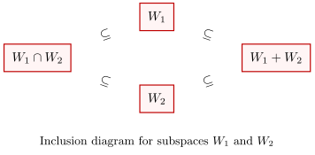

1.7 Sums of Subspaces
In the previous sections, we studied intersections and unions of subspaces. While the intersection of two subspaces is always a subspace, the union typically is not. This raises a natural question: what is the “right” way to combine two subspaces into a larger one?
The answer is the sum of subspaces.
Given two subspaces
A particularly nice situation occurs when
1.7.1. Definition and Properties
Let
Proof. To prove that
Non-emptiness: As
Closed under addition: Let
Closed under scalar multiplication: Let
This concludes that
To prove that
Containment: Since
Minimality: Let
1.7.2. Dimension
of
Let
Proof.

We use the above diagram to build intuition for the proof.
Let
Since
For
For
Claim. The set
Proof.
Let
Rearrange the equation to isolate the terms involving
Observe the vector
Since
Equating this with the RHS expression of
The set
Substitute
Since
Since all
Use dimension counting, since
Remark. Counter-example for 3 Subspaces
It is a coincidence that this formula resembles the
“Inclusion-Exclusion Principle” from set theory. This
intuition fails for three or more subspaces. The
formula:
Counter-example: Consider three
distinct lines through the origin in
- LHS: The sum of three lines fills the plane, so dimension is 2.
- RHS:
Since
1.7.3. Direct Sum of Two Subspaces
Let
Consider the vector space
We can derive that
Proof. We first show that
To establish that